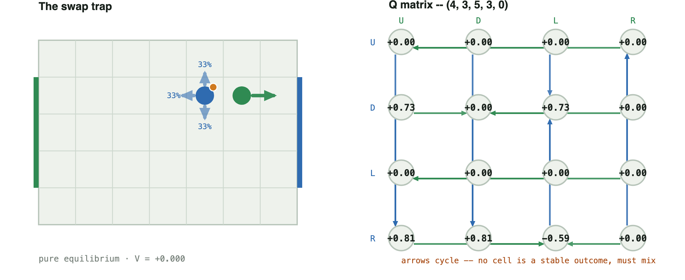
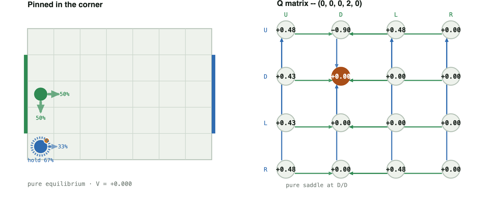
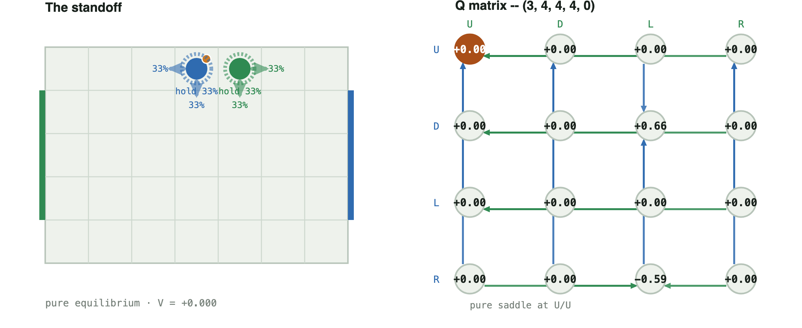
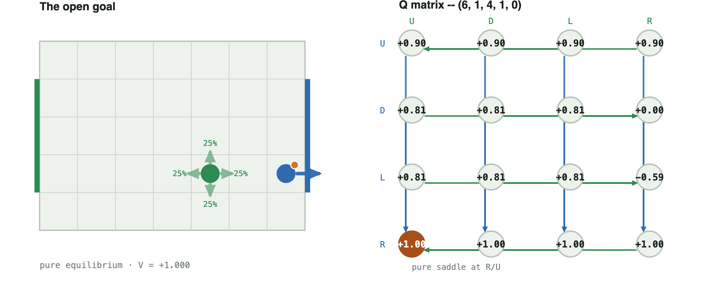
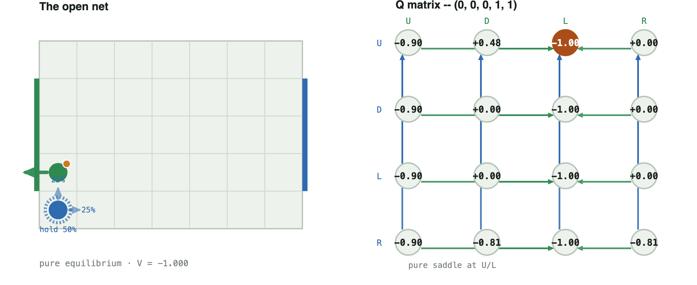
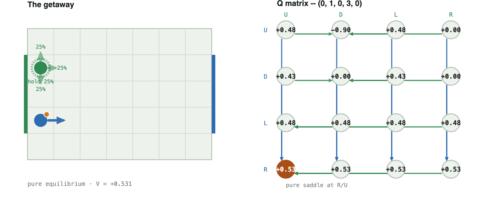

Not Littman's cases. positions.pdf is the fourteen cases on the random-move-order canonical board, where the point is mixed equilibria and fractional LP output. This is the deterministic (A10-style) twin's own edge cases: this project's headline result is that every stage game on that board is pure — but "pure" still hides real structure that the live board explorer surfaces and this page derives in full.
Ties, not tie-breaking. A pure saddle's (i*, j*) is just the first row/column achieving the guaranteed value — when more than one does, every one of them is equally optimal. The board explorer used to print only the first and imply it was the answer; it no longer does. Every case below prints the full tied set, the solver's own one-hot (tie-broken) policy, and the uniform-over-ties display policy the site now actually shows and actually plays in Step/Play/ Simulate — a uniform mix over a saddle's whole tied set is itself still an optimal strategy, not a display approximation.
Hold vs. score. A move that runs into the board edge is a genuine no-op everywhere except one place: the ball carrier, in a goal row, pushing past their own attacking edge, which ends the game instead of holding in place. Two cases below (4 and 5) exist specifically to put that on a diagram.
The collision rule itself. Winning the race to a contested cell does not mean keeping the ball — the loser of a contest or a swap gets it regardless of who reached the square first. Every transition on this page is read straight from game.transitions(), not asserted.
| Board | 7×5, goal rows {1, 2, 3}, move_order="deterministic" — the explorer's "canonical_det" |
| Rows / Columns | Player 0 / player 1, fixed for every state, never reoriented by who has the ball |
| Payoff | Player 0's Q-value |
| ⊞ mark | wall-clamped hold: legal to pick, but there's no cell there, so it does nothing |
| ⚑ mark | the carrier, in a goal row, pushing past their own edge: this scores, it is not a hold |
Player 0's U/D/L never touch player 1 at all this turn, so all three guarantee 0 regardless of player 1's reply — only R reaches player 1's square, and against L it triggers a genuine swap ((R, L) → (5,3,4,3,1), verified below) that hands player 1 the ball, dragging R's own worst case to −0.59. Player 1's unique safe column is R for an unrelated reason: U/D/L each let a smart player 0 reach a good, independent square elsewhere in the matrix (0.81 / 0.81 / 0.729) that has nothing to do with the swap cell.
Type: pure saddle, V = +0.000000 — player 0's maximin ties at U/D/L (not unique); player 1's minimax is uniquely R.
Solver's own policy (tie-broken): p0 = U 100% · p1 = R 100%
Display policy (uniform over ties, what the site shows and plays): p0 = U 33.3% / D 33.3% / L 33.3% · p1 = R 100%

U D L R
U 0.000000 0.000000 0.000000 0.000000
D 0.729000 0.000000 0.729000 0.000000
L 0.000000 0.000000 0.000000 0.000000
R 0.810000 0.810000 -0.590490 0.000000
Successor states, by joint action — rows = player 0, columns = player 1, each cell the resulting (x0, y0, x1, y1, b).
| P0 \ P1 | U | D | L | R |
|---|---|---|---|---|
| U | (4,4,5,4,0) | (4,4,5,2,0) | (4,4,4,3,0) | (4,4,6,3,0) |
| D | (4,2,5,4,0) | (4,2,5,2,0) | (4,2,4,3,0) | (4,2,6,3,0) |
| L | (3,3,5,4,0) | (3,3,5,2,0) | (3,3,4,3,0) | (3,3,6,3,0) |
| R | (5,3,5,4,0) | (5,3,5,2,0) | (5,3,4,3,1) — swap, ball to loser | (5,3,6,3,0) |
Player 0's U is the one risky action: it targets the empty cell (0,1), which player 1's D also targets. Neither player is standing there, so it's an open (non-blocked) contest — player 0 physically wins the race ((U, D) → (0,1,0,2,1), verified below) but the A10 rule still gives the ball to the loser regardless of who reached the cell first, crashing the value to −0.9. D, L, and R never reach that cell, so they tie safely at 0.
Type: pure saddle, V = +0.000000 — player 0's maximin ties at D/L/R (not unique); player 1's minimax ties at D/R (not unique).
Solver's own policy (tie-broken): p0 = D 100% · p1 = D 100%
Display policy (uniform over ties, what the site shows and plays): p0 = D 33.3% / L 33.3% / R 33.3% · p1 = D 50% / R 50%

U D L R
U 0.478297 -0.900000 0.478297 0.000000
D 0.430467 0.000000 0.000000 0.000000
L 0.430467 0.000000 0.000000 0.000000
R 0.478297 0.000000 0.478297 0.000000
Successor states, by joint action — rows = player 0, columns = player 1, each cell the resulting (x0, y0, x1, y1, b).
| P0 \ P1 | U | D | L | R |
|---|---|---|---|---|
| U | (0,1,0,3,0) | (0,1,0,2,1) — open contest, ball to loser | (0,1,0,2,0) | (0,1,1,2,0) |
| D | (0,0,0,3,0) | (0,0,0,1,0) | (0,0,0,2,0) | (0,0,1,2,0) |
| L | (0,0,0,3,0) | (0,0,0,1,0) | (0,0,0,2,0) | (0,0,1,2,0) |
| R | (1,0,0,3,0) | (1,0,0,1,0) | (1,0,0,2,0) | (1,0,1,2,0) |
Both players are already on the top row, one cell apart. U is wall-clamped (a genuine no-op) for both — not a real move upward, despite being what the solver happens to print first. R is player 0's one risky action (it reaches player 1's square: blocked against U, a real swap against L); L is player 1's mirror risk. D never touches the opponent for either player, so U/D/L (player 0) and U/D/R (player 1) all tie at the exact same safe value.
Type: pure saddle, V = +0.000000 — player 0's maximin ties at U/D/L (not unique); player 1's minimax ties at U/D/R (not unique).
Solver's own policy (tie-broken): p0 = U 100% · p1 = U 100%
Display policy (uniform over ties, what the site shows and plays): p0 = U⊞ 33.3% / D 33.3% / L 33.3% · p1 = U⊞ 33.3% / D 33.3% / R 33.3%

U D L R
U 0.000000 0.000000 0.000000 0.000000
D 0.000000 0.000000 0.656100 0.000000
L 0.000000 0.000000 0.000000 0.000000
R 0.000000 0.000000 -0.590490 0.000000
Successor states, by joint action — rows = player 0, columns = player 1, each cell the resulting (x0, y0, x1, y1, b).
| P0 \ P1 | U | D | L | R |
|---|---|---|---|---|
| U | (3,4,4,4,0) — both hold | (3,4,4,3,0) | (3,4,4,4,1) — blocked, ball to loser | (3,4,5,4,0) |
| D | (3,3,4,4,0) | (3,3,4,3,0) | (3,3,3,4,0) | (3,3,5,4,0) |
| L | (2,4,4,4,0) | (2,4,4,3,0) | (2,4,3,4,0) | (2,4,5,4,0) |
| R | (3,4,4,4,1) — blocked, ball to loser | (4,4,4,3,0) | (4,4,3,4,1) — swap, ball to loser | (4,4,5,4,0) |
Player 0 already sits at the right wall in a goal row, with the ball. Off a goal row this exact same boundary push would just hold in place — here it scores instead: verified, game.transitions() returns a terminal player-0 win for R against every one of player 1's replies. R is the unique optimum (maximin 1.0); player 1's columns all tie at minimax 1.0 too, because there is nothing any of them can do about it.
Type: pure saddle, V = +1.000000 — player 0's maximin is uniquely R; player 1's minimax ties at all four (not unique, and moot).
Solver's own policy (tie-broken): p0 = R 100% · p1 = U 100%
Display policy (uniform over ties, what the site shows and plays): p0 = R⚑ 100% · p1 = U 25% / D 25% / L 25% / R 25%

U D L R
U 0.900000 0.900000 0.900000 0.900000
D 0.810000 0.810000 0.810000 0.000000
L 0.810000 0.810000 0.810000 -0.590490
R 1.000000 1.000000 1.000000 1.000000
Successor states, by joint action — rows = player 0, columns = player 1, each cell the resulting (x0, y0, x1, y1, b) or a goal.
| P0 \ P1 | U | D | L | R |
|---|---|---|---|---|
| U | (6,2,4,2,0) | (6,2,4,0,0) | (6,2,3,1,0) | (6,2,5,1,0) |
| D | (6,0,4,2,0) | (6,0,4,0,0) | (6,0,3,1,0) | (6,0,5,1,0) |
| L | (5,1,4,2,0) | (5,1,4,0,0) | (5,1,3,1,0) | (5,1,4,1,1) |
| R | player 0 scores | player 0 scores | player 0 scores | player 0 scores |
The mirror of the open goal from player 1's side: player 1 is at the left wall in a goal row, ball in hand, and L scores unconditionally (verified against every reply). The bleaker half of this case is player 0's row: every one of U/D/L/R ties at the exact same −1.0 — there is nothing player 0 can do differently that changes the outcome, which is itself worth seeing on a board rather than only in a number.
Type: pure saddle, V = -1.000000 — player 0's maximin ties at all four (not unique, and moot); player 1's minimax is uniquely L.
Solver's own policy (tie-broken): p0 = U 100% · p1 = L 100%
Display policy (uniform over ties, what the site shows and plays): p0 = U 25% / D 25% / L 25% / R 25% · p1 = L⚑ 100%

U D L R
U -0.900000 0.478297 -1.000000 0.000000
D -0.900000 0.000000 -1.000000 0.000000
L -0.900000 0.000000 -1.000000 0.000000
R -0.900000 -0.810000 -1.000000 -0.810000
Successor states, by joint action — rows = player 0, columns = player 1, each cell the resulting (x0, y0, x1, y1, b) or a goal.
| P0 \ P1 | U | D | L | R |
|---|---|---|---|---|
| U | (0,1,0,2,1) | (0,1,0,0,0) | player 1 scores | (0,1,1,1,1) |
| D | (0,0,0,2,1) | (0,0,0,1,0) | player 1 scores | (0,0,1,1,1) |
| L | (0,0,0,2,1) | (0,0,0,1,0) | player 1 scores | (0,0,1,1,1) |
| R | (1,0,0,2,1) | (1,0,0,0,1) | player 1 scores | (1,0,1,1,1) |
R is player 0's unique safe action (0.531441, no tie) — an entirely independent move to (1,1) that never depends on player 1's reply. U looks just as reasonable but is a trap: against D, both target the same empty cell (0,2); player 0 wins the race there ((U, D) → (0,2,0,3,1), verified below) and immediately loses the ball anyway, crashing to −0.9. Player 1's columns all tie at 0.531441 — there is no reply that slows the escape down.
Type: pure saddle, V = +0.531441 — player 0's maximin is uniquely R; player 1's minimax ties at all four (not unique, and moot).
Solver's own policy (tie-broken): p0 = R 100% · p1 = U 100%
Display policy (uniform over ties, what the site shows and plays): p0 = R 100% · p1 = U 25% / D 25% / L 25% / R 25%

U D L R
U 0.478297 -0.900000 0.478297 0.000000
D 0.430467 0.000000 0.430467 0.000000
L 0.478297 0.478297 0.478297 0.478297
R 0.531441 0.531441 0.531441 0.531441
Successor states, by joint action — rows = player 0, columns = player 1, each cell the resulting (x0, y0, x1, y1, b).
| P0 \ P1 | U | D | L | R |
|---|---|---|---|---|
| U | (0,2,0,4,0) | (0,2,0,3,1) — open contest, ball to loser | (0,2,0,3,0) | (0,2,1,3,0) |
| D | (0,0,0,4,0) | (0,0,0,2,0) | (0,0,0,3,0) | (0,0,1,3,0) |
| L | (0,1,0,4,0) | (0,1,0,2,0) | (0,1,0,3,0) — both hold | (0,1,1,3,0) |
| R | (1,1,0,4,0) | (1,1,0,2,0) | (1,1,0,3,0) | (1,1,1,3,0) |
Every one of the 2,380 legal states on this board resolves to a pure saddle — the project's own headline deterministic-game result. These six cases are not exceptions to that; they are places where "pure" alone would have quietly understated the answer: a three-way tie displayed as a single arbitrary action, a wall-clamp displayed identically whether it holds or scores, and a collision rule (the loser keeps the ball, win or lose the square) that is easy to get backwards without reading game.transitions() directly. Every number, tie set, and transition above is reproducible and independently checkable exactly as printed — see the footer.